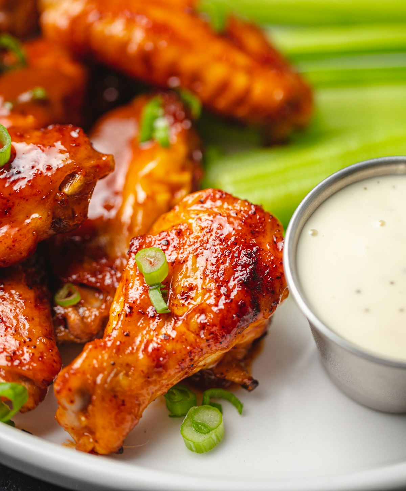

Tavern Classics
WHAT WE ARE FAMOUS FOR
From our secret recipe Maryland lump crab dip to signature half-pound smashed burgers, our kitchen prepares honest pub food made entirely from scratch.

House Specialty
The Cedar Street Burger
Half-pound custom brisket and chuck blend, sharp aged cheddar, applewood bacon, caramelized onions, house tavern sauce on a toasted brioche bun with hand-cut fries.
$15.50

Crowd Favorite
Warm Maryland Crab Dip
Lump blue crab folded with cream cheese, Old Bay seasoning, scallions, and melted cheddar jack cheese. Served piping hot with grilled pita points and celery sticks.
$14.00

Award Winning
Jumbo Tavern Wings
Crisp double-fried jumbo chicken wings tossed in your choice of 8 house sauces: Classic Buffalo, Hot Honey Habanero, Carolina Gold BBQ, Lemon Pepper Dry Rub, or Garlic Parmesan.
$15.00 / 10pc